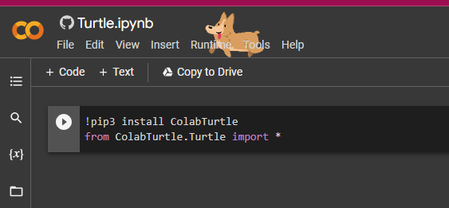

Intro to
Problem solving and
Programming in Python
(use the Space key to navigate through all slides)
Prof. Andrea Gallegati
CIS 1051 - Temple Rome
Interfaces Design
The Turtle Module
To check whether you have this module:
open the Python interpreter and type
>>> import turtle
>>> bob = turtle.Turtle()
... and a new window should pop-up!
A small arrow represents the "turtle".
Of course, this won't happen on a Dockerized environment
...cause there's no $DISPLAY at all :)
There, import an equivalent module:
>>> from svg_turtle import SvgTurtle
... that will do the job!
or keep following this class clicking here below!

this opens a new tab to redirect you towards an interactive version of this class
then click on the play button of each code block.
>>> import turtle
>>> bob = turtle.Turtle()
>>>
>>> print(bob)
<turtle.Turtle object at 0xb7bfbf4c>
- the
turtlemodule (lowercase t) - provides a function called
Turtle(uppercase T) - that creates a Turtle object
- which we assign to a variable named
bob
>>> import turtle
>>> bob = turtle.Turtle()
>>>
>>> print(bob)
<turtle.Turtle object at 0xb7bfbf4c>
printing bob displays that it refers to an object of Turtle type.
Once created, some methods move the Turtle around.
>>> bob.fd(100) # move bob forward, by 100 pixels
... a method is a function, with slightly different syntax.
a method is associated with an object (turtle).
>>> bob.fd(100) # move bob forward, by 100 pixels
it is asking: bob, move forward!
>>> bob.bk(100) # move backward
>>> bob.lt(90) # turn left by an angle (in degrees)
>>> bob.rt(90) # turn right by an angle (in degrees)
Each Turtle holds a pen, which is either
>>> bob.pu() # pen up
>>> bob.pd() # pen down
to leave a trail when moving the turtle.
To draw a right angle
import turtle
bob = turtle.Turtle()
bob.fd(100)
bob.lt(90)
bob.fd(100)
turtle.mainloop()
put this code into a file named mypolygon.py
... right after bob, but before the mainloop:
mainloop waits for user input, e.g. close the window.
... the easiest way to go would be
bob.fd(100) ; bob.lt(90) # 1st side
bob.fd(100) ; bob.lt(90) # 2nd side
bob.fd(100) ; bob.lt(90) # 3rd side
bob.fd(100) # last side
Simple Repetition
or more concisely with a ...
for statement
for i in range(4):
print('Hello!') # much simpler!
Hello!
Hello!
Hello!
Hello!
with a similar syntax to functions
for statement
- header — with an ending colon
- body — indented statements (any number)
it's essentially a loop

... the flow of execution runs through the body and then loops back to the top.
Here we draw a square with a loop:
for i in range(4):
bob.fd(100)
bob.lt(90)
add it to mypolygon.py and try it out!
note, the extra turn it takes:
this simplifies the code since we do the same thing every time through the loop!
the original for statement can be re-written as follows:
for _ in range(4):
print('Hello!') # much simpler!
Hello!
Hello!
Hello!
Hello!
without the iterator